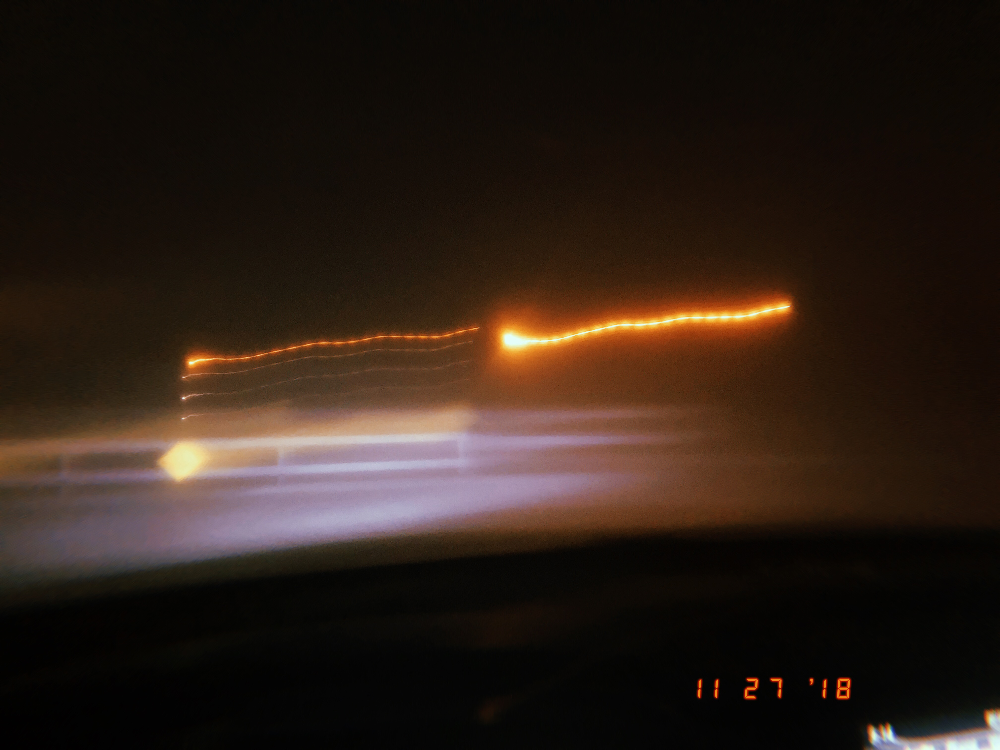
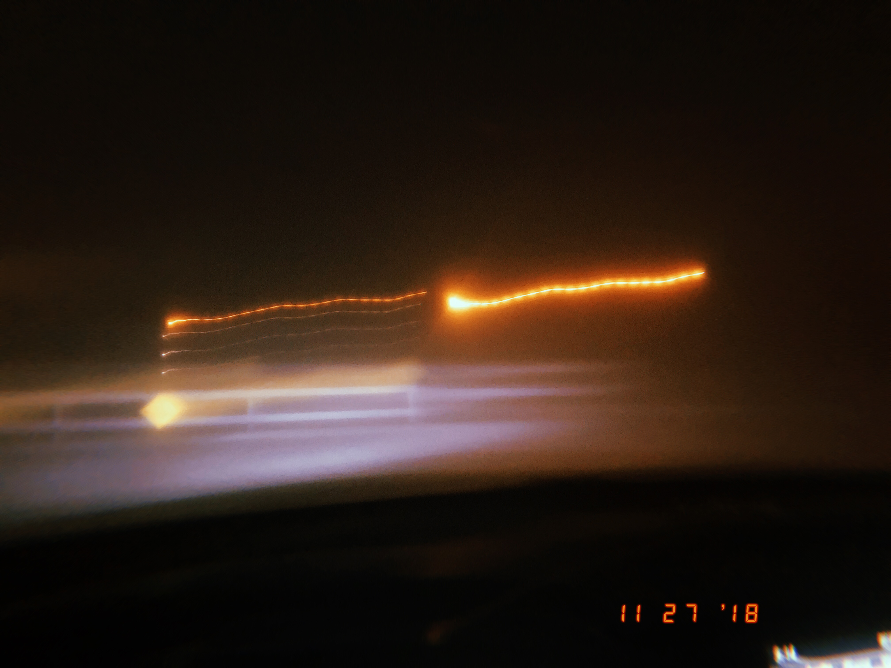

Sizhe Liu
--------------------------------------------------------------------------------
Sizhe Liu, Studying in San Jose State University in digital media art major. Generally, I enjoy in making art in an abstract way as a cultural critique based on the current issue that happens to human. I believe that showing the artwork anywhere in human’s life could strengthen the awareness and perception on what they might not realized before.
The projects that contain videos are all achieved by Adobe Premiere and photoshop for basic editing, such as video effects, background music, texts and speeding. And for projects that are showed on website, I used html, css and Javascript. However, my inspirations are basically from what I have experienced and read about. After reading a lot of articles that talking about, I found that technology is not only exist for serving human, but also destroying and taking advantage of human. So, there is a video project and a video based net art project to reveal these phenomenons Also, there are projects came from my personal experience: one demonstrates what different sighted person see, and the other presents my early internet memory will be shown in next two pages.